【マスクに付かない感動】
自分色に変わる最新ファンデでシミ・毛穴ゼロのツヤ肌にいなる秘密が凄い
PR:三昧生活
いくつになったって、毛穴もくすみもない若々しい肌でいたいですよね
そのために欠かせないのがファンデーション!
気になる肌悩みを隠してくれる大切なパートナーです
でも、ファンデって正直合う色がわからないと思いませんか?
・顔だけ白く浮いて、首の色と違う...
・美容部員さんに合わせてもらってもしっくりこない
・最初は良くても時間が経つとくすんでくる
実は今、そんなお悩みから救ってくれる超・革新的ファンデが発売になったと話題沸騰中なんです!
そのファンデ、塗る前はこんなに真っ白なのですが
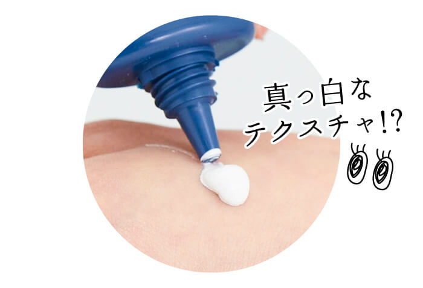伸ばすとみるみる色が変わって...
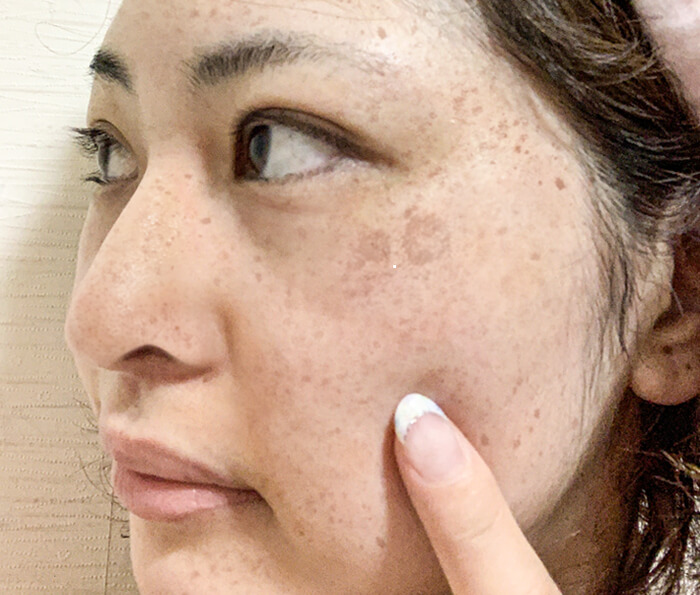自分の肌色に早変わり!
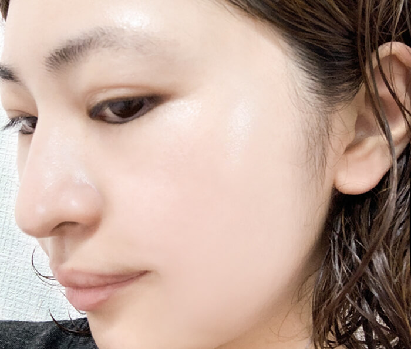隠したいものは全部隠れているのに、圧倒的な素肌感!
しかも塗りたてのツヤが一日続いて崩れないんです!
その仕上がりの綺麗さから、SNSでも発売早々バズってるんだとか!
私自身これを使うようになってから
「肌に透明感があってすごく綺麗!」
「どこのファンデ使ってるの!?」
と言われるようになりました♪
あまりにも感動したので全人類にオススメしたい!新作最強ファンデとは...
カラーチェンジファンデーション
「ターナリー」
なんとこれ、使う人の肌に合わせて色が変わる驚きのファンデなんです!
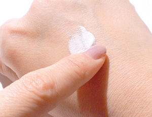色白さんでも色黒さんでも、イエベでもブルベでも関係ナシ!
誰でも簡単に、ナチュラルなツヤ肌が手に入っちゃうんです
しかもこんなに自然なのにカバー力も◎
コンシーラー無しでも「最初からなかった」みたいに綺麗に隠してくれます!
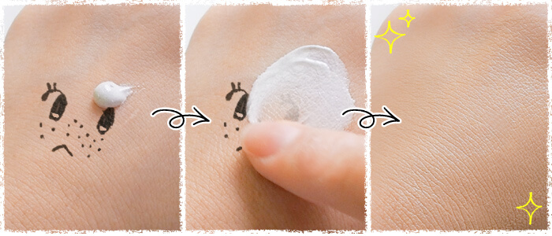色が変わる秘密はファンデに含まれている特殊なカプセル!
カプセルが弾けると、使う人の肌の水分量に反応して色が変化!誰でも簡単に"自分色ファンデ"が使えるというわけなんです♡
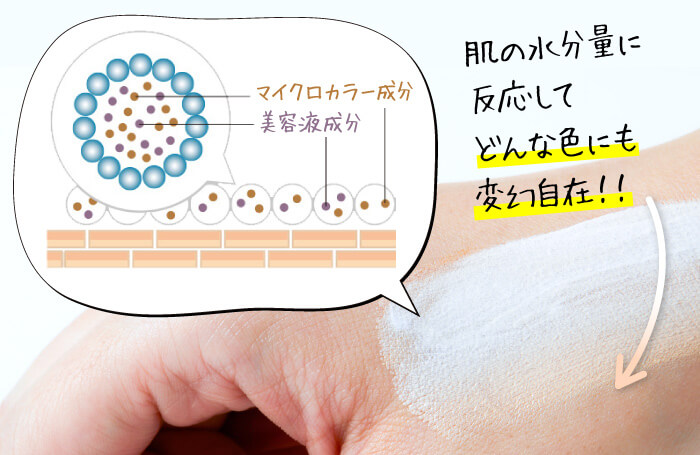加えて天然由来のオイルもたっぷり入っているから、ハイライト無しでもみずみずしいツヤ感が出るんです
この上品なツヤが、マイナス10歳肌を実現してくれます✨
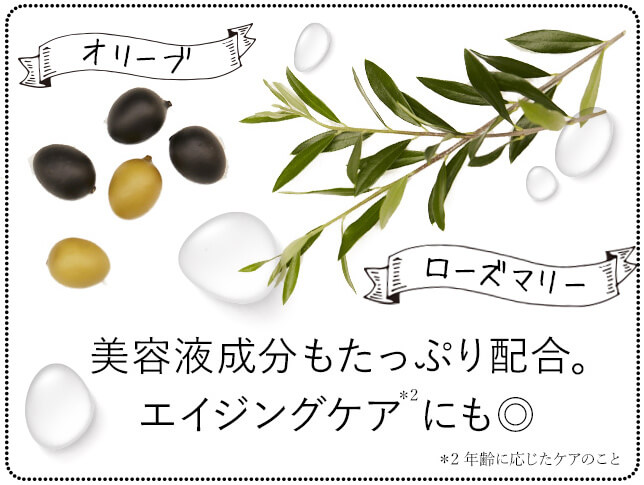実際に使ってみました
今年41歳になり、くすみが隠せなくなってきた私も試してみることに
商品自体はこんな感じで、ハンドクリームみたいなサイズです
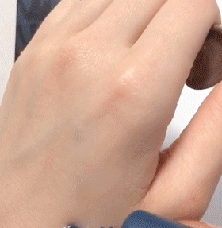手に出すと、本当に真っ白!!
これが自分の色に変わるとはにわかには信じがたいですが...
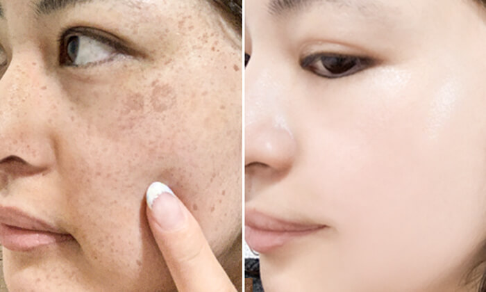本当に変わりました!
SPF35で下地効果もあるみたいで、塗ったのはこれだけ
カバー力もあり、ツヤも綺麗に出ていますが厚塗り感はゼロ!
評判は本当だったみたいです...!
▶▶詳細はコチラ
【先着順】ターナリーがお得に買えるチャンス!
ターナリーファンデは通常価格5800円とちょっとお高めなのですが...現在発売記念キャンペーン中!
半額の2900円(送料無料)で購入できるみたいです!
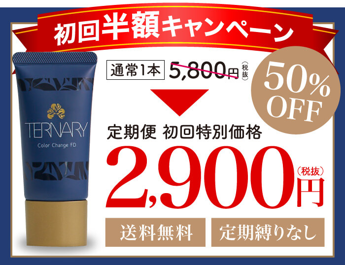すごく伸びが良くて少ししか減らないので、3ヶ月くらいは余裕で使える！
通販でよくある回数縛りもないし
使ってイマイチでも、全額返金・返品保証つきなので安心して試せます♡
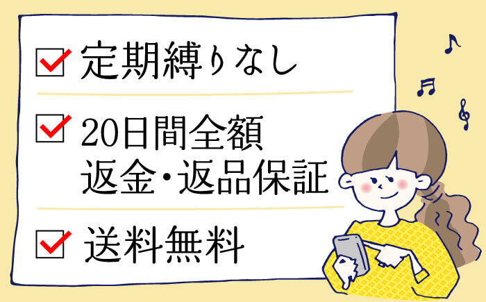せっかくのチャンスなので、試しにひと塗りしてみてください♪

>>公式サイトはこちら
※商品を使用した感想は全て個人の感想で、実際の効果効能を保証するものではありません。